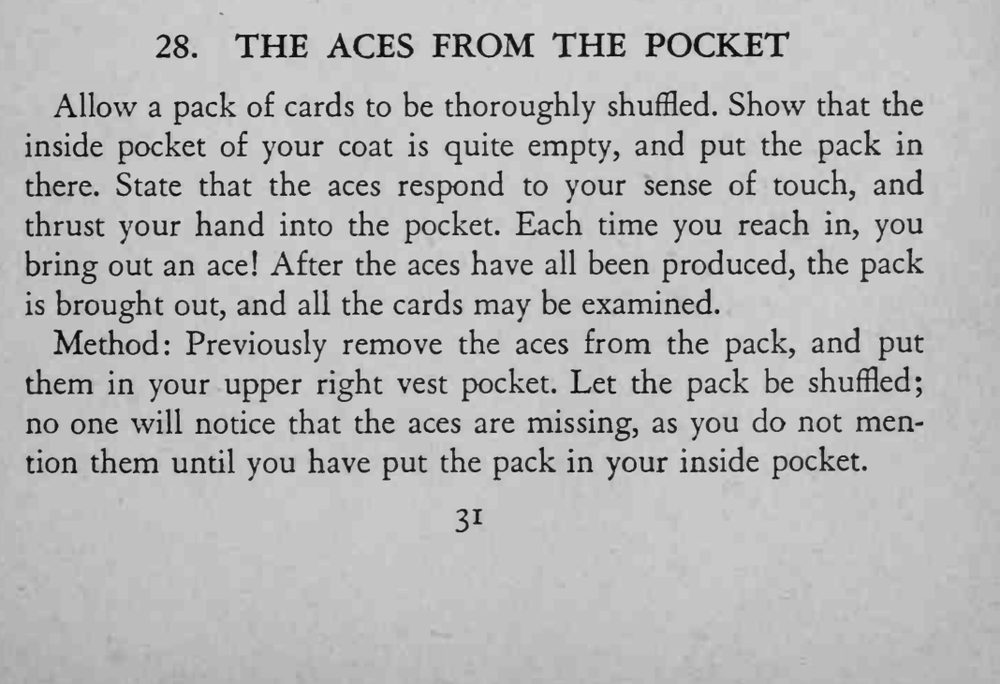
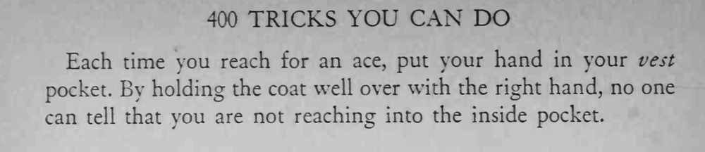

众目之下洗乱的牌放进外套内袋，魔术师每次伸手进去都能摸出一张 A；最后整副牌拿出来任人检查。
外套要选内袋位置靠近马甲的那种，拉衣襟的动作才自然。


Allow a pack of cards to be thoroughly shuffled. Show that the inside pocket of your coat is quite empty, and put the pack in there. State that the aces respond to your sense of touch, and thrust your hand into the pocket. Each time you reach in, you bring out an ace! After the aces have all been produced, the pack is brought out, and all the cards may be examined. Method: Previously remove the aces from the pack, and put them in your upper right vest pocket. Let the pack be shuffled; no one will notice that the aces are missing, as you do not mention them until you have put the pack in your inside pocket. Each time you reach for an ace, put your hand in your vest pocket. By holding the coat well over with the right hand, no one can tell that you are not reaching into the inside pocket.